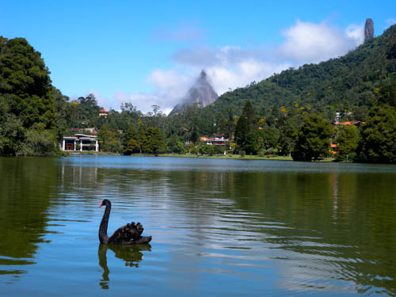
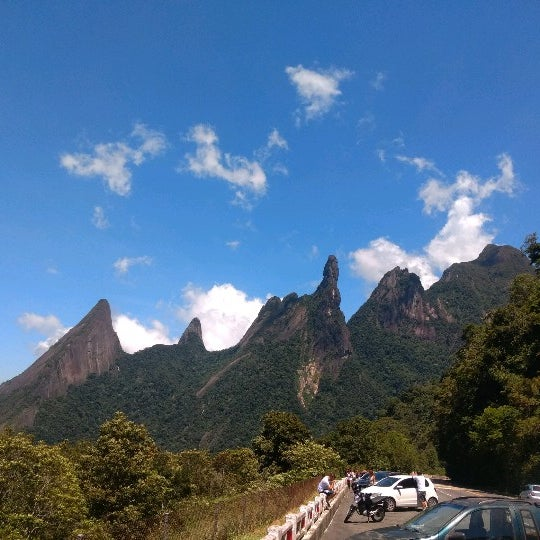

Pontos Turísticos de Teresópolis
PRINCIPAIS ATRATIVOS
Não faltam opções na hora de montar um roteiro caprichado e decidir o que fazer em Teresópolis!
Para quem adora curtir um friozinho e está no Rio de Janeiro planejando uma escapada na serra para o final de semana, a cidade de Teresópolis é uma ótima opção.
LAGO COMARY
O Lago Comary é uma das belezas naturais que não podem deixar de ser visitadas, quando vem a Teresópolis.
Um lugar bucólico, de uma beleza sem igual e com uma vista exuberante.
Para vê mais fotos e saber a localização entre outras informações acesse aqui ou navegue até nossa barra de nevegação.
MIRANTE DO SOBERBO
O Mirante do soberbo é o cartão postal da entrada da cidade de Teresópolis. Tire uma foto com a vista privilegiada da montanha do Dedo de Deus e com a cidade de Niterói e da Baía de Guanabara no Rio de Janeiro ao fundo.
Para vê mais fotos e saber a localização entre outras informações acesse aqui ou navegue até nossa barra de nevegação.PEDRA DA TARTARUGA

Ao visitar Teresóplis não se pode ir embora sem visitar esse lugar, ao subir a trilha você terá uma lista vista da Pedra da tartaruga, além de outras trilhas que você pode fazer se tiver com tempo!
Para vê mais fotos e saber a localização entre outras informações acesse aqui ou navegue até nossa barra de nevegação.